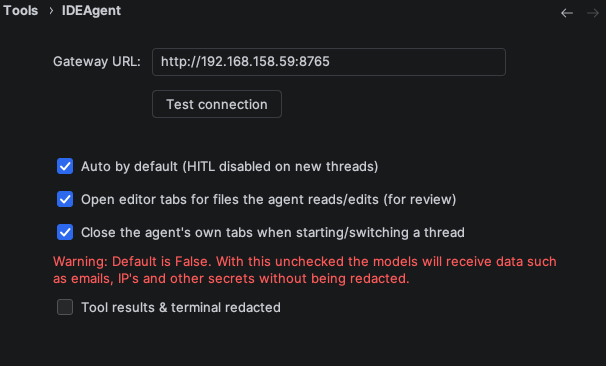
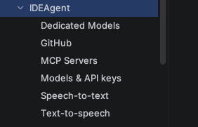
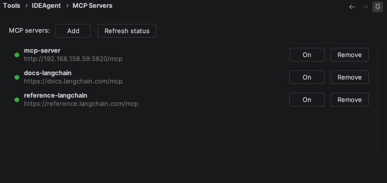
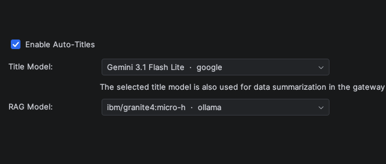
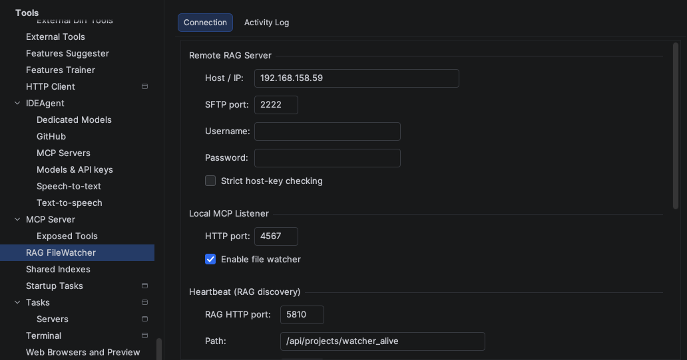
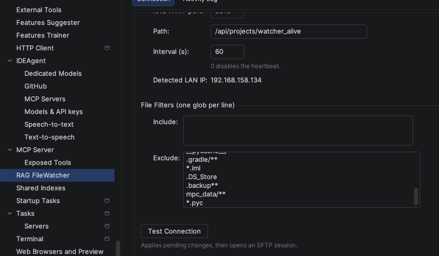
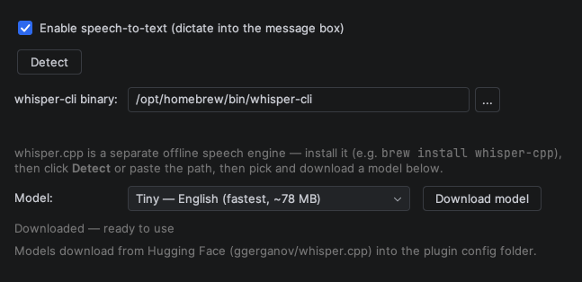
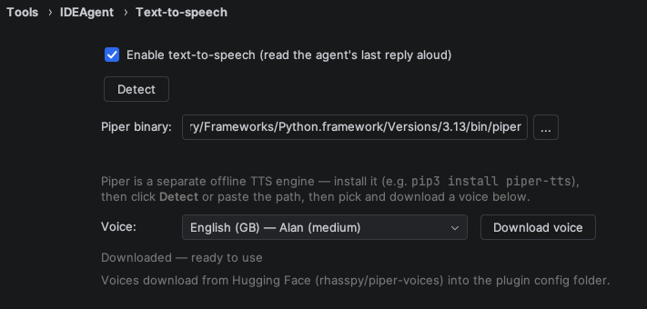

The plugin is the face of the whole system — a native PyCharm / IntelliJ tool window that
turns your IDE into an agentic coding surface. It runs no model itself: it connects to your
own Gateway, streams the agent's work back into the editor, and
keeps you in control. This page walks through how to set it up from its Settings panels.
What it does in your IDE
IDEAgent installs as a tool window with four tabs — running entirely against
infrastructure you own:
Chat — project-aware conversation with the agent, streamed live into the tool window.
Threads — every conversation is a persistent thread you can switch between and resume.
Tasks — the agent's planned steps for a request, so you see what it intends to do before it does it.
Edits — the file changes the agent proposes or applies, surfaced inside the IDE.
Each thread carries an Auto switch for human-in-the-loop: with it off, the
agent pauses for your approval before consequential actions. With Auto on, it proceeds on
its own. You are always the gate.
Open the settings
Everything below lives under the plugin's Settings panel — no files to edit.
Each section maps to one screen you fill in once.

Main settings. Point the plugin at your Gateway and set the defaults for new threads (starting Auto mode, editor behaviour). Use Test connection to confirm the Gateway is reachable before you start.

All settings at a glance. The sub-pages — MCP Servers, Models, RAG, Speech-to-text and Text-to-speech — are reached from here. Set them up in the order below.
MCP Servers
MCP servers are the tools the agent may call through the Gateway — the
context engine, RAG search and project memory. Add your local
server, toggle it on, and refresh to confirm it is reachable.

MCP Servers. Add each server, enable it, and use the refresh/status control to verify the connection. Disabled servers are simply not offered to the agent.
Models
IDEAgent runs fully local through Ollama. Beyond the main coding model, a
couple of small helper models keep the experience smooth — auto-generating thread titles and
powering RAG retrieval.

Dedicated models. Enable auto-titles and pick a small model for it, and choose the model used for RAG. A compact local model (served by Ollama) is enough for both.
RAG & the file watcher
The RAG file watcher lives inside the plugin. It keeps your project index in sync with the
RAG server so the agent always retrieves the current state of your code.
Connect it to your machines, then let it index.

Connection. Point the watcher at your RAG server and confirm it links to the machine(s) you want indexed.

Indexing & status. Watch the index build and stay current as you edit. Indexing quality is highest on CUDA GPUs; it still works on shared-memory GPUs (Dell / Mac), just with reduced quality.
Speech-to-text (Whisper)
Voice input is optional and fully local. It uses Whisper, which must be
installed on the machine running the plugin — the plugin then detects the binary.
Install Whisper on this machine (for example brew install whisper-cpp).
Open the Speech-to-text settings and enable it.
Use Detect to locate the installed binary, then select a model to download.

Speech-to-text. Once detected and a model is downloaded, you can dictate to the agent. The audio never leaves your machine.
Text-to-speech (Piper)
Voice output uses Piper, also installed locally and detected by the plugin.
Install Piper on this machine (for example pip3 install piper-tts).
Open the Text-to-speech settings and enable it.
Use Detect to locate the binary, then download a voice.

Text-to-speech. With a voice downloaded, the agent can read its replies aloud — no cloud speech service involved.
Privacy — redaction
Sensitive values never reach the agent. Optional redaction strips secrets —
IP addresses, emails, API keys and tokens — from tool and terminal results before they are
shown or sent onward. Privacy is core: everything runs locally, and going local is the point.